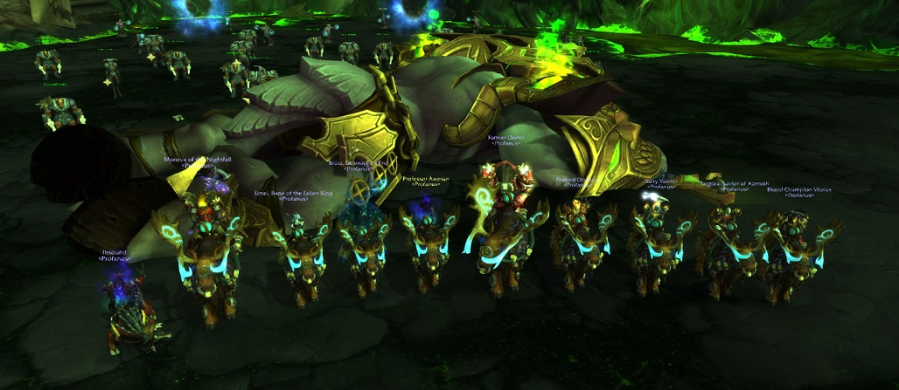

Fill out our application form!
Apply nowFind out all about our raids, social events and organization.
Find out moreWednesday and Monday,20:00 to 23:00 realm time
(Social raid on Sundays)
We steadily progress through heroic content, and we usually kill some mythic bosses before the end of a tier.
Outside of raids, we organize many guild events, such as old raid achievement runs, PvP groups, mythic dungeon groups and world quest groups.
We love World of Warcraft, but we have families, friends and jobs too. We don't play every day, and we don't expect you to either.
If you are looking for a guild that understands and encourages your life outside the game, we are are here for you.
Profanus is a raiding guild on Ragnaros EU. Our purpose is to have good progression, while only raiding twice a week. To make this happen, we have some guidelines and rules that apply to our raiders.
As a raiding guild, our primary goal is to kill as many bosses as possible per raid. We have outlined how we achieve this below. We expect every Profanus raider to know and to follow these rules.
We raid Wednesday and Monday from 20:00 server time until
23:00 server time.
During this time, we expect people to be online and available. We have a break in the middle of the raid where raiders can take care of whatever business.
To make the most of our raids, we don't want to waste time in them. This means we expect raiders to be on time, to have prepared, and to be in the right mindset.
Raiders should have enough food, flasks, and potions on you to make it through the raid. We expect them to be at the raid entrance 15 minutes before the raid. We also expect them to have read up on the boss tactics and to know how to play their class and spec.
Raids are fun, but they must also be serious. Jokes are only funny if they don't waste other people's time or effort. We like jokes, but during bosses we expect our raiders to pay attention to the fight, the raid leader and their role.
We aim at having a raid team with at least 80% attendance. Since we only raid twice a week, it should be possible for everyone to meet this schedule.
If people cannot make a raid day, we expect them to the officers know well in advance and to decline the raid invite. We understand that life gets in the way sometimes, but planning is a virtue. As long as raiders are predictable, we will try to work with them.
We have a loot council consisting of the officers and raid leader to distribute loot. They will attempt to distribute loot to increase the performance of the raid as a whole. This means raiders might not always get the loot they want when they want it.
When asked, the officers will provide a reason for the way they distribute loot. The goal is to be fair and sensible. At the end of the day, everyone will get gear in due time. There have generally never been issues about loot distribution in the raids.

We are an old school guild where members play together, talk to each other and enjoy each other's company. As a result, there's always someone to play with. Our members run Mythic+ dungeons, do world quests, level together or hang out on TeamSpeak while doing their own thing.
We also organize social events every week. For example, we organize a weekly alt raid, weekly Mythic+ dungeon runs, occasional war games and even RP events. We love it when our members organize events, and usually promote and support them.
Over the years, we've accumulated a group of 'friends of the guild'. These are alumni of the guild or people we've met while playing. They're usually high-end raiders that enjoy the atmosphere and enjoy playing with us. You'll see them around in our organized events.
Outside the game, we use Slack to keep contact. Slack is where we communicate raid logs and upcoming events. We also use it to talk about the game, life and anything in between.
In short, we're a group of friends that's always looking for more people to join us.
We maintain a peaceful, comfortable and tolerant community with friends and 'family'. All our members have read, understood and abide by the following. Potential members should read this before applying. As we are an adult (20+) guild, the /g will sometimes contain adult content. Even so, these rules still apply. Minor offences will receive a warning, major and repeat offences will result in removal from the guild.